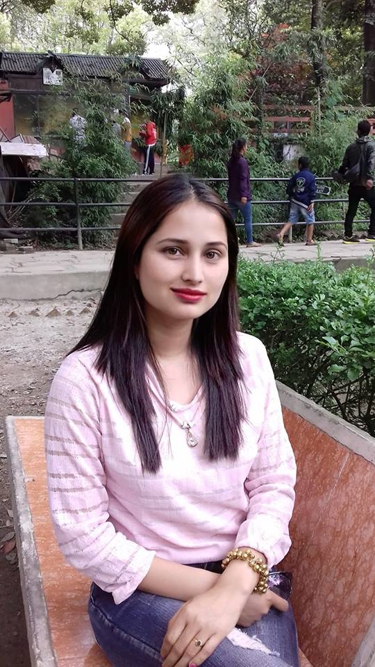
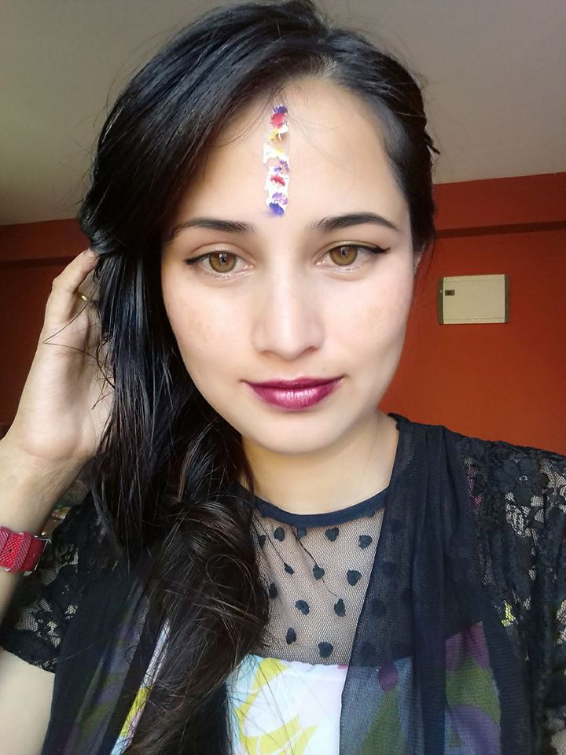

firstly, i would like to thank you for providing me with this opportunity to introduce myself. Its a pleasure to introduce myself.Hello everybody I am katwal sirisha, i am from nepal one of the new students of KCGI. i completed my BSW bachelor in social Social work from triton international college with 59% and plus 12 in Namuna machindra college with 56% and my schooling in Diana secondary school with an aggregate 60%, these are my education qualifications.Now i study master degree at The kyoto college of Graduate studies for informatices. As i am a fresher, i will put all my efforts for the good progress of my field.my plan is to work same field which i study technology. technology is human knowledge which involves tools, materials, and system. my strength are self-motivated and able to work in critical situation, smart worker. my interest in design courses and technology, i am quick learner and prefer the smart work. i am quick learner and prefer the smart work. my hoppies are listening to songs, playing badminton and carrom. so far, my family background is concerned. there are four family members in my family including me. my father Mr Nim bahadur Katwal works in finance and my mothers Mrs.Sabitra katwal is a home maker and brothers Ms. Rajkumar katwal he study. my family is nuclear. my primary goal is to get this job because i need a platfrom where i can enhance my skills and knowledge. the secondary goal is always passionate about every step of mylife.
 